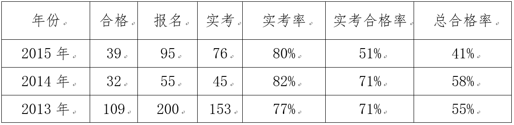
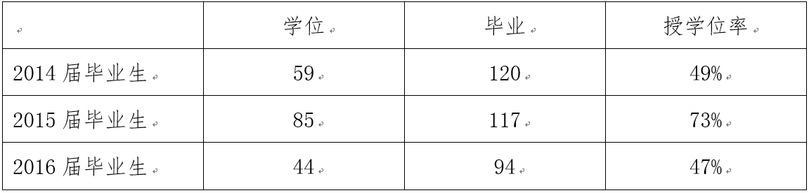
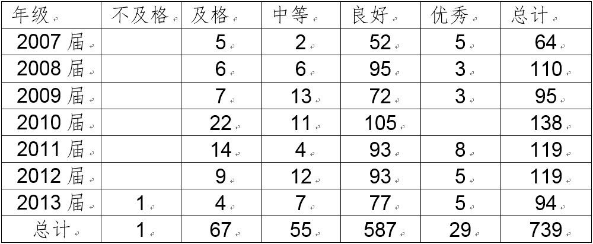

2016年江苏省成人高等教育重点专业（含精品资源共享课）申报网站
2007年省级成教特色专业
 申报材料 >培养质量
申报材料 >培养质量
学院采取多项措施，构建保障成教本科教学水平持续提高的长效机制：成立院教学委员会，实行教学评估制度和奖励制度，激励教师研究教育教学规律，参与教育教学改革，提高教学质量和水平；按照《南京大学教学规程》和《教师手册》制定本院相关制度，对各教学环节的管理和质量标准做出明确规定，确保教学活动组织、教学质量评价有章可循；实施标准化管理，推行院部领导和教学督导听课、中期检查制度，通过组织学生评教、教师自评等质量检查活动，推广先进的教学经验和教学方法，激励广大教师开展教学方法改革和教学内容更新，建立优良教风。
在2007年法学专业申报立项成为江苏省第一批成教特色专业后，经过院系和学校的人力、财力、物力的投入，不断的探索人才培养模式，改进教学方法，改革考试手段等内容，使学生的培养质量有明显的提高，学生基本功扎实，成教学生毕业证、学士学位证书获得率显著提高。
1、江苏省成人学位英语水平考试

2、毕业生学位获得率

3、毕业论文优良率
法学院毕业论文近几年成绩分布比较合理，良好比例为79.4%，优秀比例为3.9%，良好以下比例为16.7%左右。
